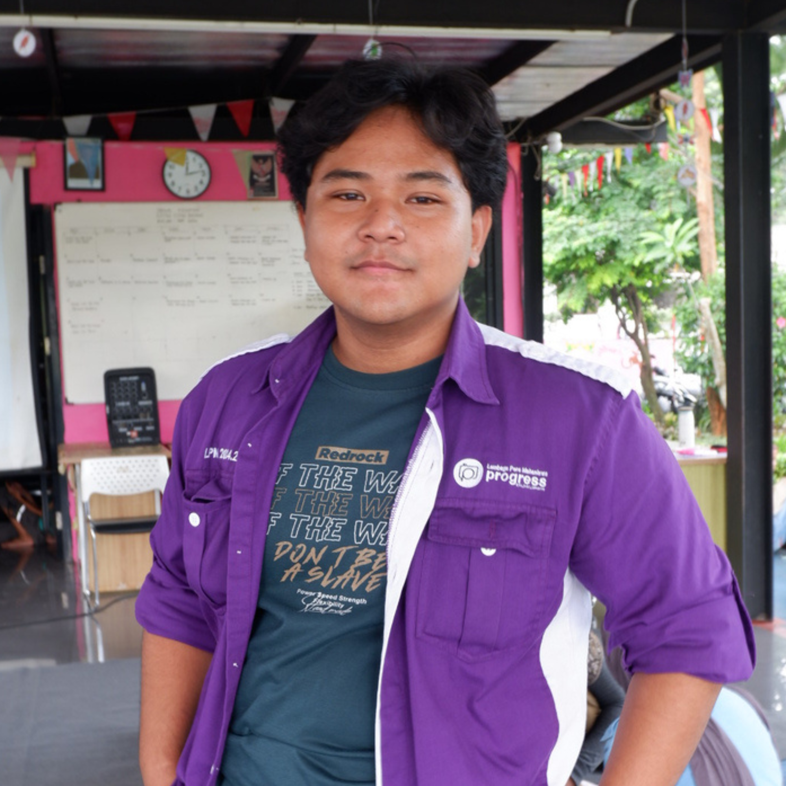
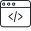

Instalasi dual-booting OS
Melakukan instalasi linux dan windows pada satu device.
View Project →Hello, I'm
Mahasiswa Teknik Informatika Universitas Indraprasta PGRI yang memiliki antusias pada bidang Linux sysadmin, Server, dan Desain.
Lihat Project
Saya adalah mahasiswa Teknik Informatika yang memiliki ketertarikan pada
Linux, system administration, networking, dan server. Saya menikmati
proses mempelajari bagaimana sebuah sistem bekerja, mulai dari mengelola
sistem Linux, memahami jaringan, hingga melakukan troubleshooting ketika
terjadi masalah.
Saat ini saya terus mengembangkan kemampuan saya melalui pembelajaran
mandiri dan berbagai project untuk membangun pengalaman di bidang IT
infrastructure.
Selain bidang IT saya juga memiliki ketertarikan pada bidang desain maka
dari itu saya mempelajari beberapa software untuk menopang skill desain
saya.
Basic Linux administration dan troubleshooting.
Memahami dasar jaringan komputer.

Java, Python, HTML, CSS.
Photoshop, Canva.
Melakukan instalasi linux dan windows pada satu device.
View Project →Melakukan kustomisasi pada linux.
View Project →